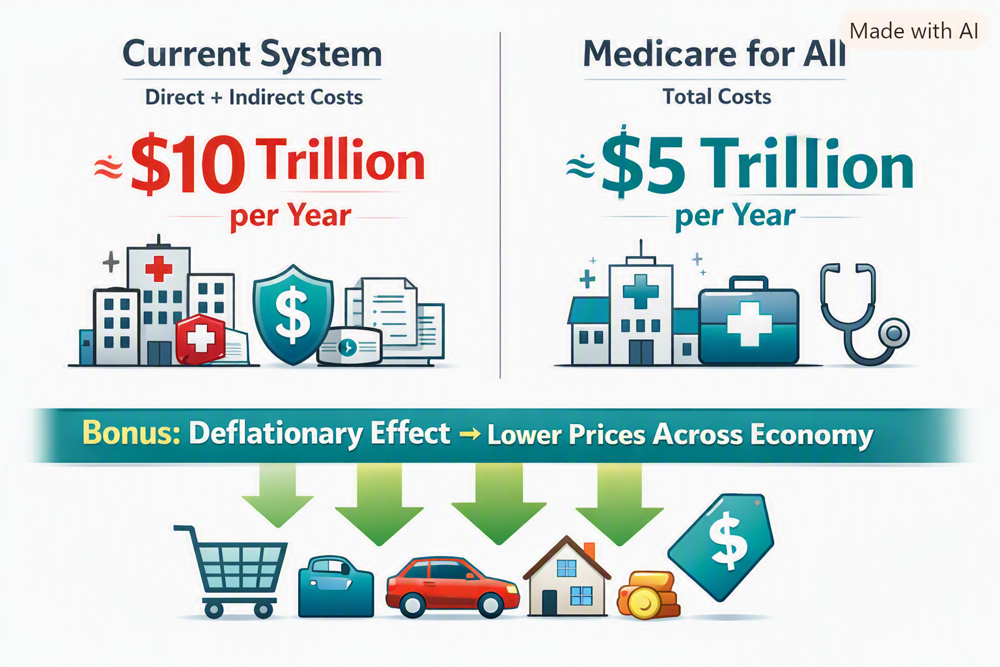

Article 26: The Hidden Economic Dividend of Medicare for All
How reform might improve competitiveness, wages, and purchasing power.

Download illustrated Word document (.docx)
How freeing employers from health insurance costs could strengthen wages, competitiveness, and purchasing power
Author-supplied conceptual illustration. The $10 trillion and $5 trillion figures are illustrative assumptions, not verified national estimates; price reductions are possible, not assured.
The savings we rarely discuss
When Americans debate Medicare for All, the conversation usually begins with what it would cost the federal government. That is the wrong place to end the analysis. A systems engineer asks what the entire system costs to operate—and what the rest of the economy could do if that system were redesigned.
Today, health coverage is tied to employers for many working Americans. Businesses pay premiums, negotiate plans, manage enrollment, handle benefits administration, and absorb uncertainty from annual price increases. Workers may stay in jobs primarily to preserve coverage. Entrepreneurs may hesitate to start businesses because buying insurance on their own is expensive or complicated. These are real economic burdens even when they never appear as a line item in a national healthcare spending report.
A simple but powerful change: take health insurance off the employer’s desk
In a comprehensive, publicly financed Medicare for All system, healthcare coverage would no longer depend on employment. Employers would not have to sponsor private health insurance in the same way they do now. They could redirect some of the resources currently devoted to premiums and administration toward other purposes.
Those resources are not automatically free money. Businesses and households would help finance the new system through whatever taxes or contributions the legislation establishes. The net benefit depends on how those payments compare with current premiums, administrative expenses, and other costs. Nevertheless, simplifying the financing of care could reduce friction across the economy.
Where the economic dividend could go
Higher wages. Employers facing lower net benefit costs could use part of the savings to improve compensation or benefits.
Lower prices. In competitive markets, firms with lower operating costs may lower prices to win customers or protect market share.
More investment and hiring. Businesses could expand operations, modernize equipment, or hire additional workers.
More entrepreneurship. People who no longer fear losing job-based coverage may be more willing to start companies, work independently, or change careers.
Stronger small businesses. Smaller employers could compete for talent without bearing the same complexity and risk of organizing private health plans.
Less disruption from untreated illness. More consistent access to care could help some workers avoid preventable complications, absences, and lost productivity.
Lower costs are not the same as guaranteed deflation
The illustration imagines a healthy, downward pressure on prices throughout the economy. That possibility deserves serious study. If a reform reduces the real resources needed to administer and deliver healthcare, some businesses may pass those savings along to consumers. That could lower the price level for particular goods and services or slow the rate at which prices rise—an effect economists call disinflation.
But economy-wide deflation means a sustained fall in the overall price level, and it is not an automatic or necessarily desirable consequence of reform. Prices also depend on wages, demand, supply constraints, competition, monetary policy, and the taxes used to fund the new system. Businesses may retain savings as profits, invest them, or raise wages rather than cut prices. A persuasive case should promise an opportunity for lower costs, not a guaranteed era of falling prices.
The $10 trillion versus $5 trillion question
My illustration compares roughly $10 trillion in current direct and indirect annual costs with $5 trillion under Medicare for All. This is a thought-provoking scenario, not an established measurement. The United States already spends several trillion dollars a year on healthcare, but adding indirect economic burdens requires careful definitions. Lost productivity, forgone entrepreneurship, financial distress, and other spillovers cannot simply be added without checking for overlap or double counting.
A serious comparison would estimate both systems using the same year, population, benefits, and price assumptions. It would separate direct medical spending from broader economic effects, account for the taxes replacing premiums, and show a plausible range of results rather than a single dramatic number. It would also include transition costs, provider capacity, and potential increases in care use when financial barriers are removed.
What a credible economic model should measure
Current premiums and employer benefit-administration expenses, including employee contributions.
Public spending, household out-of-pocket payments, and the financing required for universal coverage.
Administrative savings from simpler billing, eligibility, and payment systems.
Changes in prescription prices, provider payments, service use, and access to care.
Job mobility, new-business formation, labor supply, absenteeism, and productivity—without double counting.
Distributional effects: which households and firms gain, which pay more, and how quickly savings materialize.
Price pass-through: how much lower net business costs translate into wages, prices, investment, or profits.
An opportunity for America to become more competitive
Employer-based insurance is not only a healthcare arrangement; it is part of the cost structure of American industry. A carefully designed universal system could reduce administrative overhead, improve portability, and make the labor market more flexible. These benefits could matter to manufacturers, retailers, service firms, startups, and workers alike.
That is why the Medicare for All debate should not be reduced to the question, “How much would the government spend?” The proper question is, “What would Americans, businesses, and governments spend altogether—and what economic opportunities would the reform create?”
The conclusion: count every cost, then follow every saving
I believe the economic case for Medicare for All may be much stronger than a comparison of medical bills alone suggests. Lower net costs for employers could create a second dividend in the form of higher wages, lower prices in some markets, more investment, and greater freedom to change jobs or start businesses.
We should investigate that possibility with transparent numbers and realistic assumptions. If we can build a system that covers everyone, protects patients, and uses our national resources more efficiently, we owe it to ourselves to find out how much better our economy could work.
It is not enough to ask what Medicare for All costs. We must also ask what our current system prevents us from becoming.
Research notes
For a national estimate, distinguish healthcare expenditures from economy-wide opportunity costs. Useful starting points include CMS National Health Expenditure Accounts (cms.gov/data-research/statistics-trends-and-reports/national-health-expenditure-data), KFF Employer Health Benefits Survey (kff.org), and the Congressional Budget Office’s analyses of single-payer healthcare systems (cbo.gov). No verified research establishes the particular $10 trillion/$5 trillion comparison or guarantees overall deflation.
Willis Butts | Medicare for All